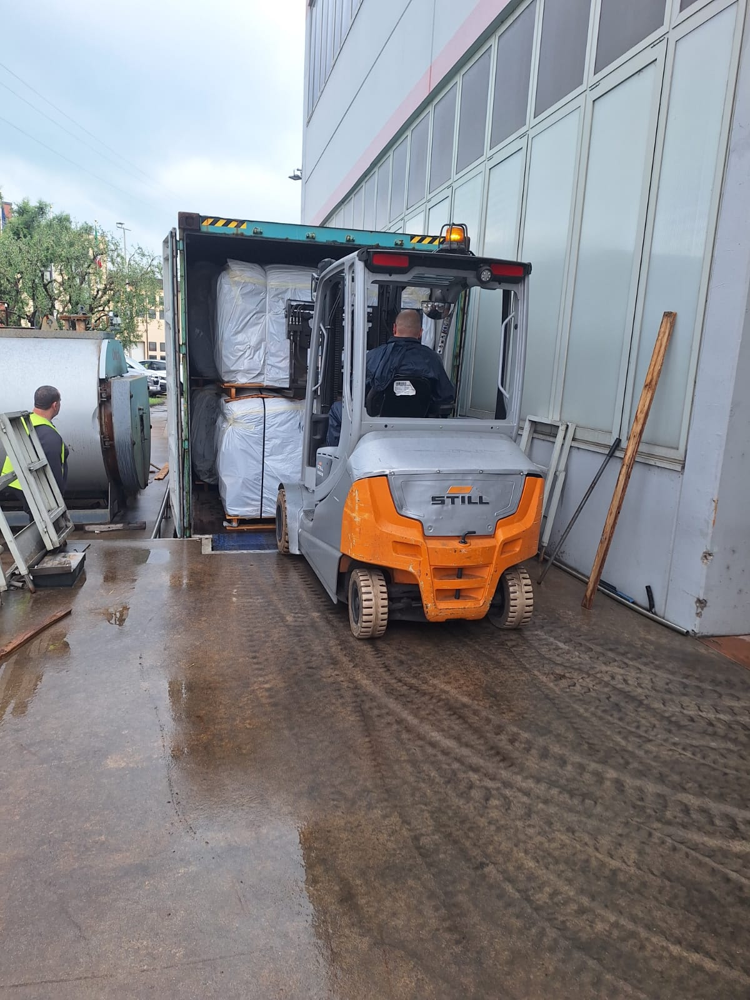
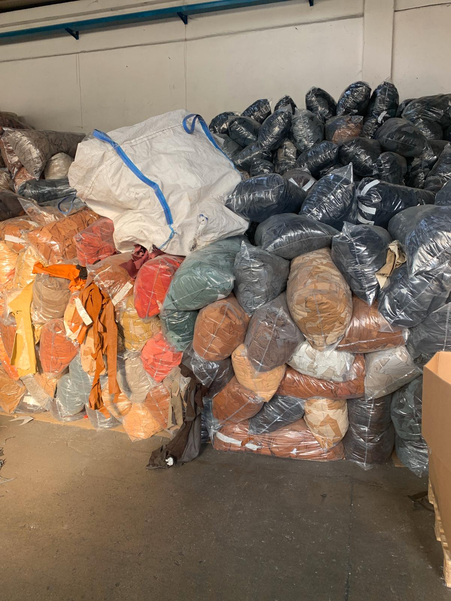
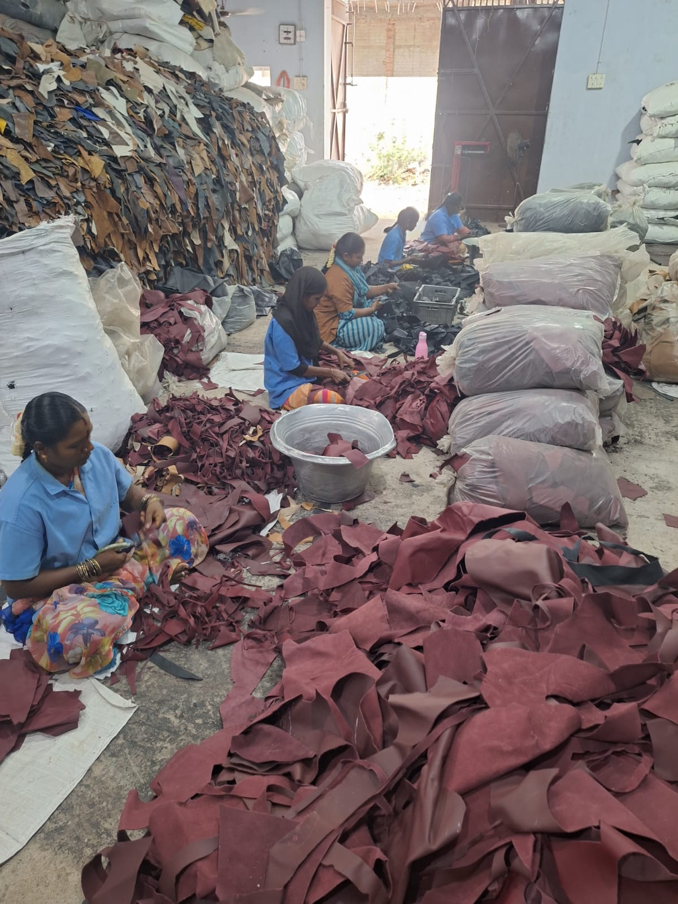
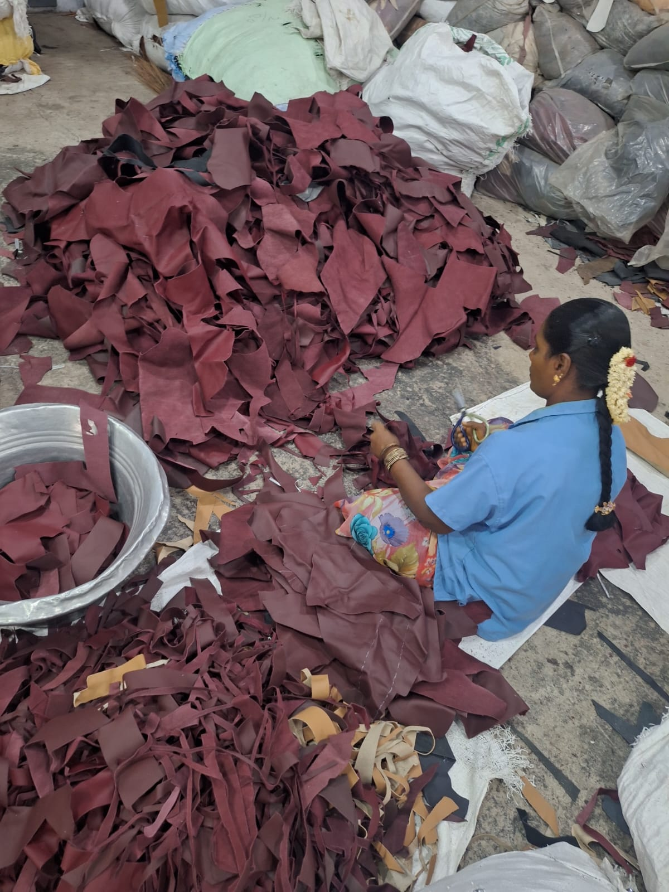
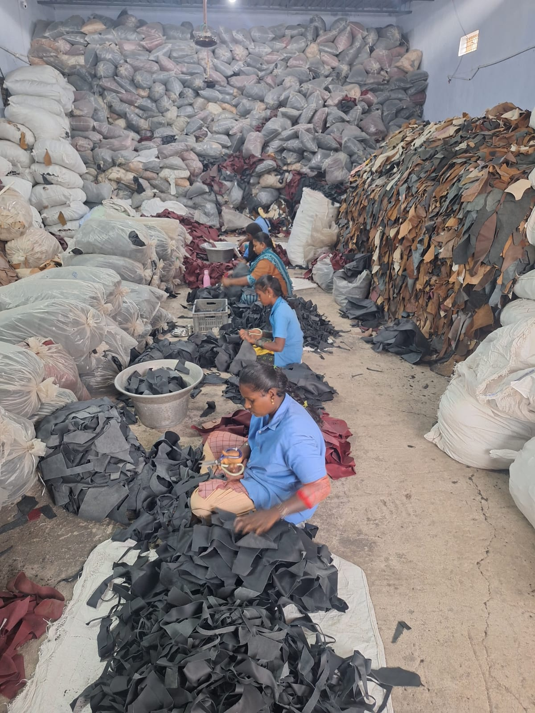
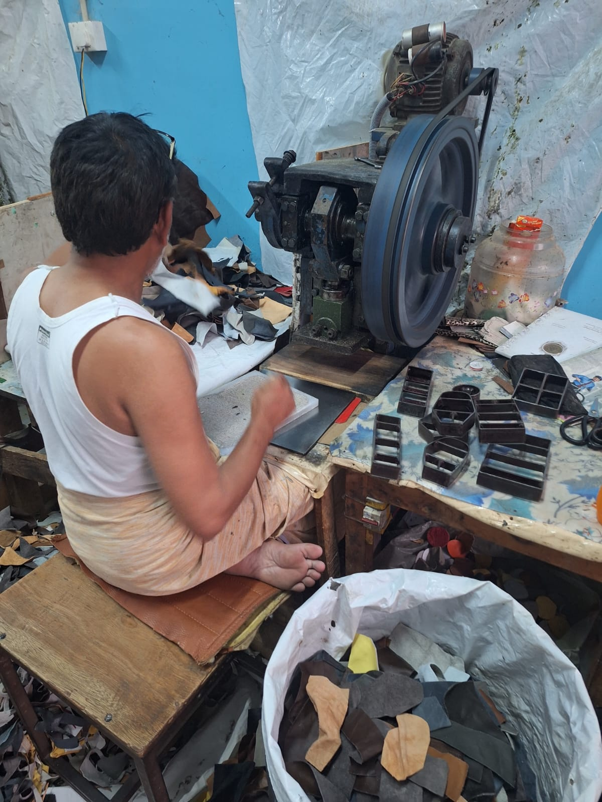
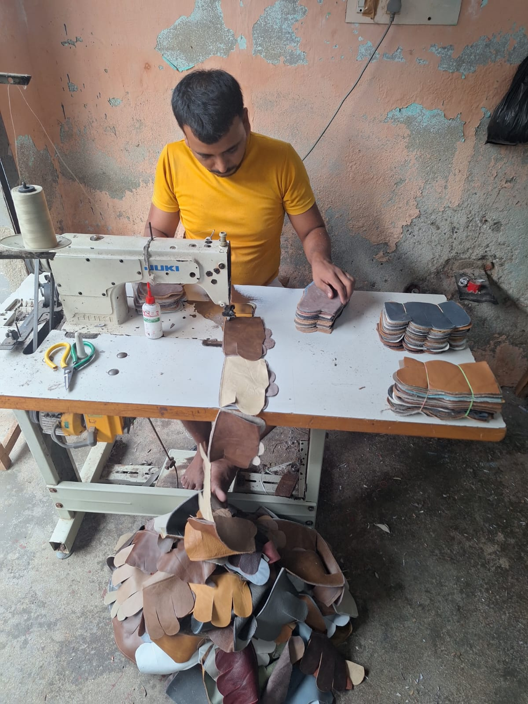
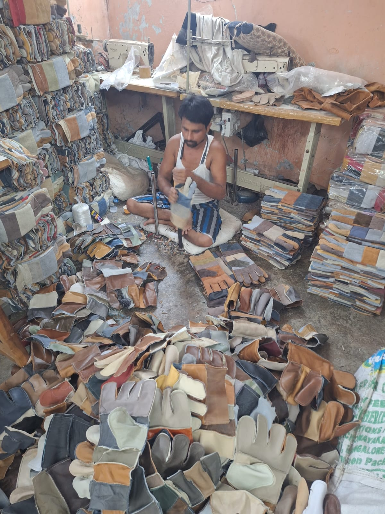
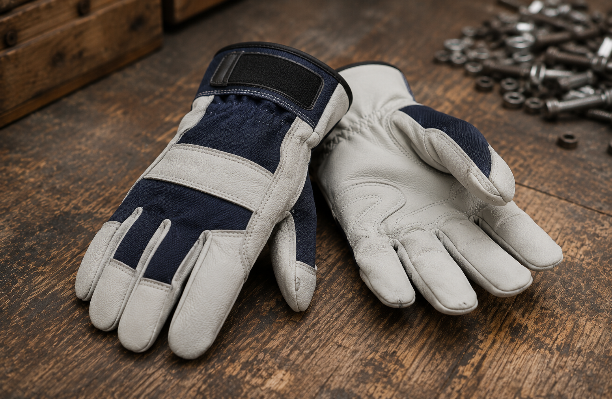
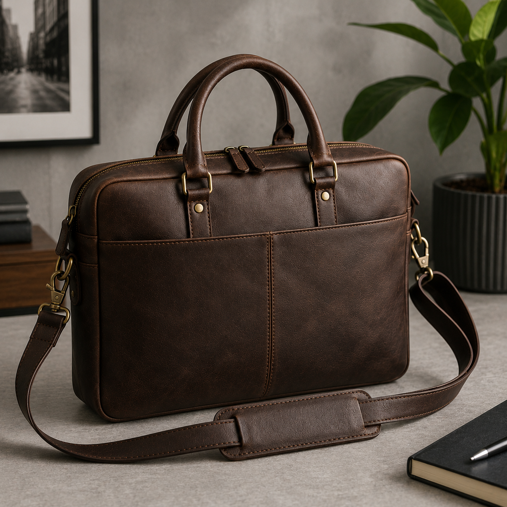

The Manufacturing Process
Every piece we produce begins as finished leather imported from Europe's leading processing facilities — graded, cut, stitched, and assembled at our facility in Pernambut, Tamil Nadu. What leaves our floor is not a by-product. It is a finished product built to standard.
01
Import
We source our leather exclusively from established processors and tanneries across Italy and other European nations. The leather we import is fully tanned and finished — automotive upholstery off-cuts, furniture leather remnants, and high-grade scraps produced during European manufacturing.
These consignments arrive at our Pernambut facility in palletised bales weighing upwards of 1,000 kg per unit, loaded directly from European warehouse floors and sealed for container transit. Every batch is verified against our import records before it enters the facility.





02
Quality Control
Once received, every batch is manually sorted by our trained team. No machine can replace the human eye at this stage — our workers examine each piece for texture, thickness, flexibility, and surface quality before assigning it a grade.
We classify all incoming leather into four grades:
Nothing is wasted. This grading system allows us to price competitively while maintaining full material accountability at every stage.
03
Precision Manufacturing
Graded leather moves to the production floor where our clicking machines take over. Each grade is matched to its corresponding product die — a custom metal form that stamps out panels and strips with exact precision.
Belt strips, glove panels, garment sections — every cut is measured and consistent. The output is sorted by colour and width into bundles, minimising waste and ensuring assembly proceeds without fitting issues downstream.



04
Craft & Assembly
Cut panels move to our stitching floor, where skilled operators work on industrial Juki sewing machines. Each seam is run at the correct tension and stitch count — a detail that determines the lifespan and finish quality of the final product.
Gloves are assembled piece by piece — back panel, palm, thumb, and cuff — in a precise sequence. For garments and belts, each section is joined and reinforced before finishing. Our workers are trained across multiple product types, ensuring consistent output regardless of order size.
05
Our Products
Every finished piece passes through a final quality inspection — checked for stitching, surface quality, and dimensional accuracy — before being packaged and dispatched. Our production spans multiple product lines, all manufactured from the same graded leather that enters our facility.

